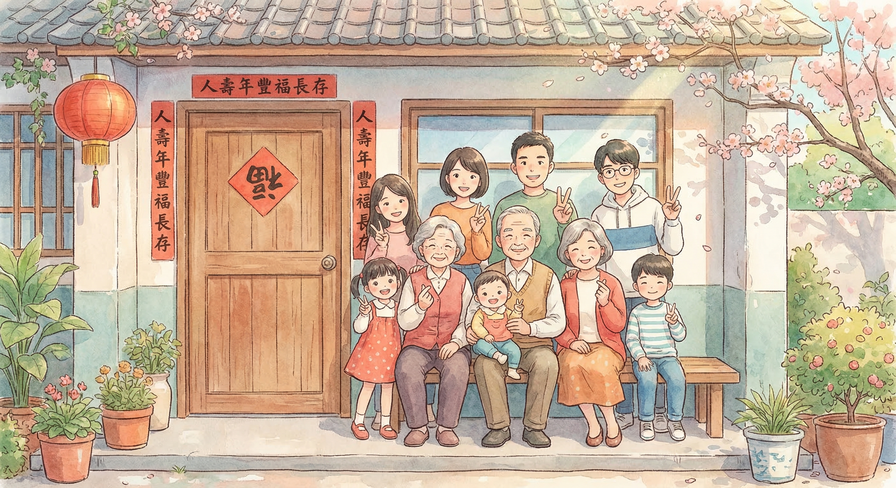
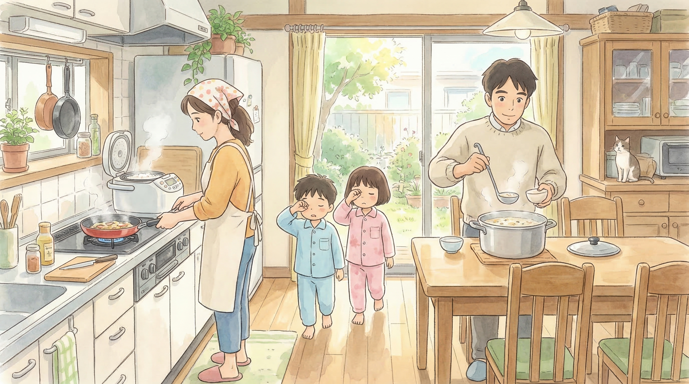
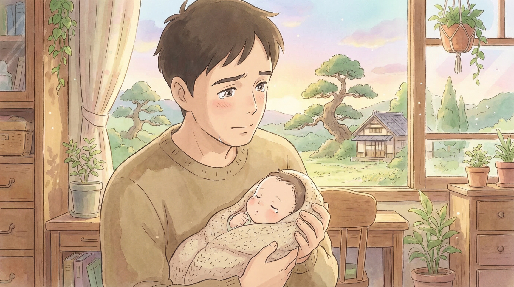
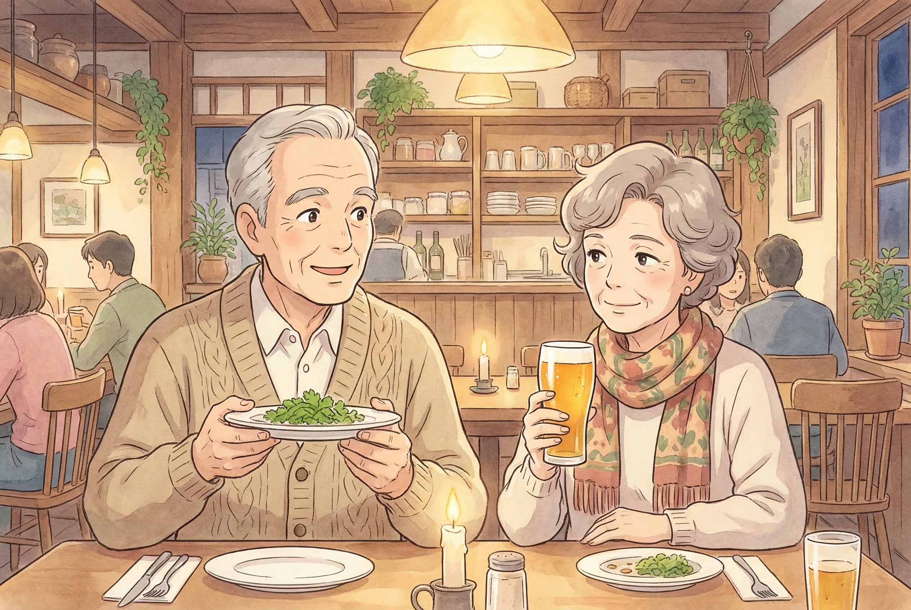
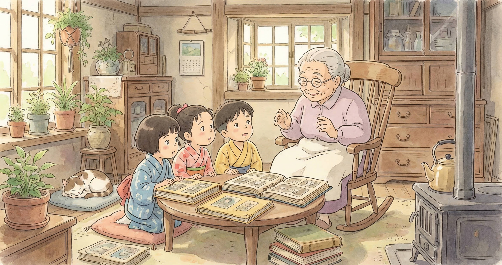

宮崎駿動畫風格 AI 生成 · 家庭小確幸

春節清晨，老家門口，紅艷艷的春聯，九個人四代同堂擠成一排合照。
爺爺說：家就是過年時，門楣上那副「人壽年豐福長存」。

週末清晨，廚房裡飄來粥香，電鍋噗嗤噗嗤冒著蒸氣，煎鍋滋滋作響。
媽媽說：家就是週末清晨，廚房裡飄來的粥香。

第一次抱起自己的孩子，新手爸爸的眼神裡充滿了激動與柔情。
爸爸說：家就是看著孩子，一天一天長大的模樣。

燭光餐廳裡，他記得她不吃香菜，她記得他愛喝的啤酒。
他們說：家就是結婚多年後，依然牽著的手。

孩子們圍在奶奶身邊，聽著那些聽了無數遍的故事。
奶奶說：家就是把老故事，說給新一代聽。
🎨 使用 Gemini 3 Pro Image API 生成 · 真正的 AI 創作
生成時間：2026-03-14 06:13 AM